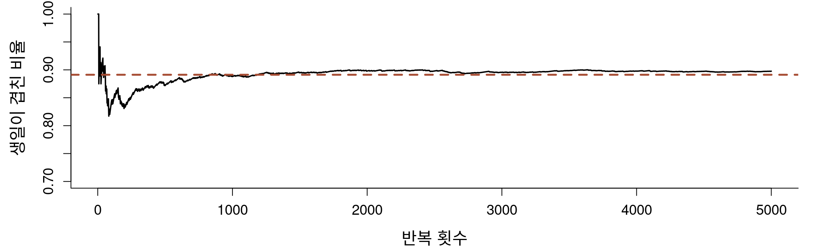
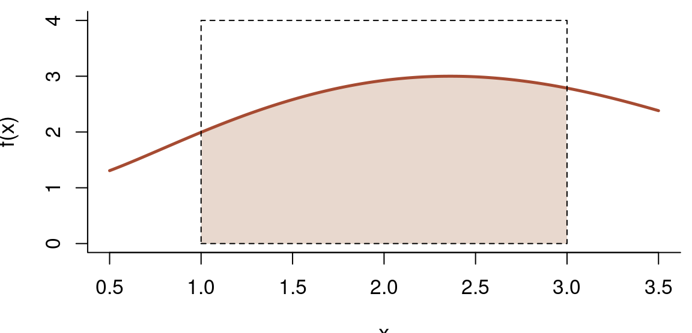
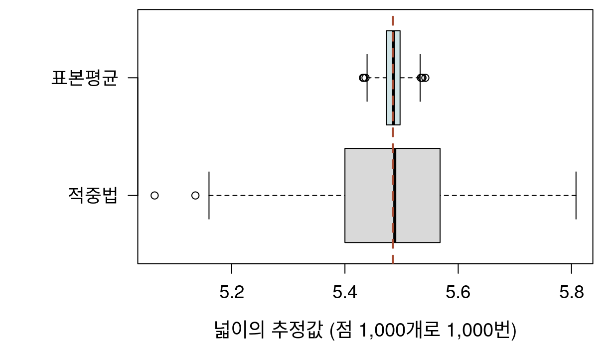
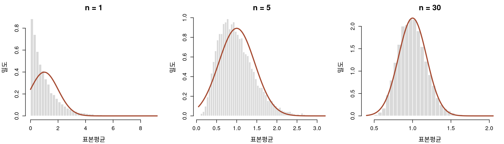
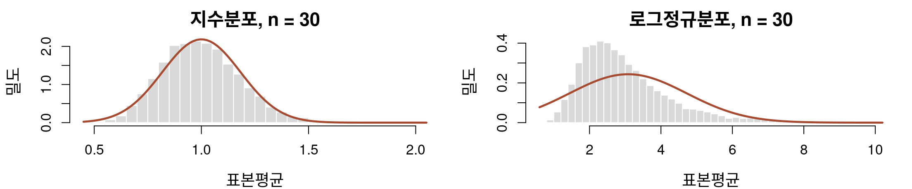
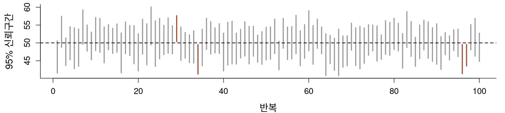
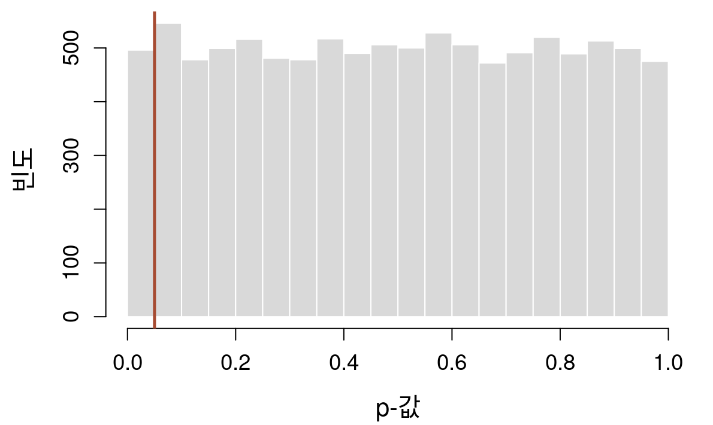
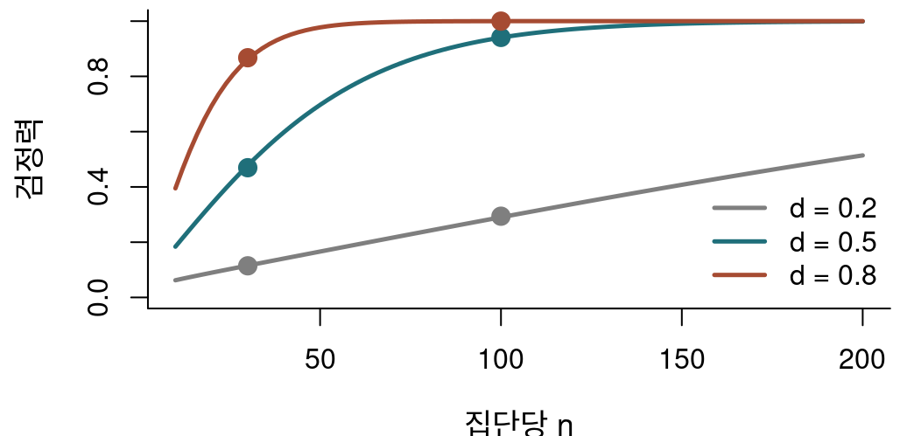
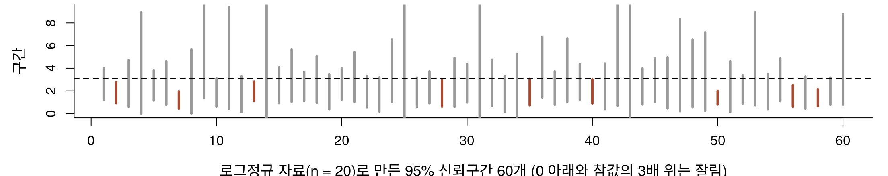
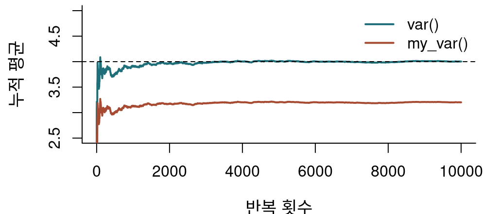

has_shared_birthday <- function(n) {
birthdays <- sample(1:365, n,
replace = TRUE)
any(duplicated(birthdays)) # 겹침이 있는가
}
set.seed(2026)
has_shared_birthday(40)[1] TRUEhas_shared_birthday(40)[1] TRUE정답을 아는 세계에서 방법을 시험하기
충남대학교 정보통계학과
2026-09-12
정답을 알려 주는 기준이 없을 때, 정답을 아는 세계를 만들어 방법을 시험: 시뮬레이션은 검증의 도구
| 절 | 내용 | |
|---|---|---|
| 1 | 시뮬레이션과 몬테카를로 방법 | 생일 문제, 반복 횟수와 오차, 난수와 재현성 |
| 2 | 확률과 기댓값의 추정 | 주사위 게임, 카드 짝 맞추기 |
| 3 | 몬테카를로 적분 | 원주율, 표본평균 방법, 뷔퐁의 바늘 |
| 4 | 표본분포와 중심극한정리 | 평행우주의 통계량, 30개면 충분한가 |
| 5 | 통계적 추론을 시뮬레이션으로 확인하기 | 신뢰구간, 1종 오류, 검정력, 가정이 깨지면 |
| 6 | 시뮬레이션으로 코드 검증하기 | 한 번의 예제로는 보이지 않는 결함, 흔한 실수 |
| 7 | AI와 함께 | 시뮬레이션 코드의 검증 |
시뮬레이션: 확률 모형에서 가상의 자료를 만들어 같은 실험을 많이 반복하는 방법
반복한 결과의 비율과 평균으로 확률과 기댓값을 근사: 몬테카를로 방법
이 절에서
이 절이 답하는 질문: 컴퓨터로 몇 번 반복하면 확률을 믿을 만하게 알 수 있는가?
40명이 듣는 이 강의실에 생일이 같은 두 사람이 있을 확률은?
모형의 가정
한 번의 실험
40명 가운데 생일이 같은 사람이 적어도 한 쌍 있을 확률은?
A 10% 안팎
B 50% 안팎
C 90% 안팎
replicate(B, 식): 식을 B 번 실행해 결과를 모음. 논리값의 평균은 TRUE 의 비율
이론값: 모두 다를 확률의 여사건
\[1 - \frac{365}{365}\times\frac{364}{365}\times\cdots\times\frac{326}{365}\]
| 사람 수 | 시뮬레이션 | 이론값 |
|---|---|---|
| 10 | 0.1170 | 0.1169 |
| 23 | 0.5078 | 0.5073 |
| 30 | 0.7032 | 0.7063 |
| 40 | 0.8880 | 0.8912 |
| 50 | 0.9712 | 0.9704 |
23명이면 이미 절반 초과: 두 사람씩 짝짓는 방법이 40명이면 780가지
반복은 우연의 오차만 줄임: 모형의 가정이 틀리면 그 차이는 남음

확률과 기댓값은 ’무한히 반복했을 때’의 값: 컴퓨터로 충분히 많이 반복해 근사
반복 횟수 \(B\) 를 100배로 늘리면 추정값의 오차와 실행 시간은?
\[\text{표준오차} = \sqrt{\frac{p(1-p)}{B}}\]
A 오차 1/100, 시간 100배
B 오차 1/10, 시간 100배
C 오차 1/10, 시간 10배
반복 결과의 비율: 성공 확률이 \(p\) 인 시행을 \(B\) 번 한 표본비율, 그 표준오차가 몬테카를로 오차
| B | 추정값 | 실제오차 | 표준오차 | 시간(초) |
|---|---|---|---|---|
| 100 | 0.8600 | 0.0312 | 0.0347 | 0.001 |
| 1,000 | 0.8900 | 0.0012 | 0.0099 | 0.014 |
| 10,000 | 0.8930 | 0.0018 | 0.0031 | 0.148 |
| 100,000 | 0.8899 | 0.0013 | 0.0010 | 1.432 |
반복 100배 → 표준오차 1/10, 시간은 반복 횟수에 거의 비례
정확도 한 자리를 더 얻는 비용: 반복 100배 (8장의 비용)
추정값은 오차와 함께 읽기: \(B\) = 10,000, \(p\) 약 0.89 → 표준오차 약 0.003 → 참값은 대략 추정값 ± 0.006
[1] 0.6986735 0.5565305 0.1401400[1] 0.6986735 0.5565305 0.1401400[1] 0.28572331 0.55536901 0.02513115set.seed(): 결과를 재현하기 위한 장치확률과 기댓값의 정의: 무한히 반복했을 때의 값
무한히는 못 해도 충분히 많이는 가능
이 절에서
이 절이 답하는 질문: 이 게임, 해도 되는가?
주사위 두 개, 같은 눈이면 +10,000원, 다르면 -5,000원. 한 판의 평균 상금은?
A 약 +2,500원 (이득)
B 약 0원
C 약 -2,500원 (손해)
이기면 받는 돈이 지면 내는 돈의 두 배, 그런데 두 눈이 같을 확률은?
이론값
\[E(X) = 10{,}000 \times \frac{1}{6} - 5{,}000 \times \frac{5}{6} = -2{,}500\]
첫째 줄: 오류로 멈춤
둘째 줄: 조용히 틀림
위험한 쪽은 멈추는 코드가 아니라 그럴듯한 값을 내며 끝나는 코드
카드 13장을 섞어 한 장씩 뒤집기, i 번째 카드의 번호가 i 인 적이 한 번이라도 있으면 패배. 질 확률은?
matching_game <- function(n_cards) {
deck <- sample(1:n_cards) # 비복원 추출: 카드 섞기
any(deck == 1:n_cards) # 짝이 하나라도 맞으면 TRUE
}A 약 10%, 52장이면 더 작음
B 약 60%, 52장이어도 거의 같음
C 약 90%, 52장이면 더 큼
카드가 많아지면 한 장의 짝이 맞을 확률 1/n 은 줄지만, 짝이 맞을 기회는 늘어남
이론값: 포함배제의 원리
\[1 - \sum_{k=0}^{n}\frac{(-1)^k}{k!} \;\longrightarrow\; 1 - \frac{1}{e} \approx 0.632\]
| 카드 수 | 시뮬레이션 | 이론값 |
|---|---|---|
| 2 | 0.50195 | 0.5000 |
| 3 | 0.66355 | 0.6667 |
| 5 | 0.63205 | 0.6333 |
| 13 | 0.63305 | 0.6321 |
| 52 | 0.63325 | 0.6321 |
13장이든 52장이든 약 0.632: 짝이 맞을 확률 1/n 과 기회 n 번이 상쇄
시뮬레이션은 답을 확인하는 도구이자 답을 짐작하게 해 주는 도구
넓이(적분)도 확률이나 평균으로 바꾸면 시뮬레이션으로 계산 가능
식으로 적분하기 어렵거나 변수가 많은 적분에서 쓸모
이 절에서
이 절이 답하는 질문: 같은 비용이면 어떤 방법이 더 정확한가?
| 점의 수 | 추정값 | 실제 오차 | 이론 표준오차 |
|---|---|---|---|
| 100 | 3.16000 | 0.01841 | 0.16422 |
| 1,000 | 3.22000 | 0.07841 | 0.05193 |
| 10,000 | 3.11600 | 0.02559 | 0.01642 |
| 100,000 | 3.13724 | 0.00435 | 0.00519 |
| 1,000,000 | 3.14119 | 0.00040 | 0.00164 |
| 10,000,000 | 3.14216 | 0.00056 | 0.00052 |
점 100만 개를 뿌리는 시간(초)
| 방식 | 초 |
|---|---|
| 하나씩 (for 문) | 1.101 |
| 한꺼번에 (벡터) | 0.046 |
표준오차: 점 100배마다 1/10, 실제 오차는 우연히 들쭉날쭉
결과는 같고 벡터 연산이 수십 배 빠름
원주율을 구하는 방법으로는 비효율적, 그러나 어떤 모양의 넓이든 같은 방법으로 구할 수 있음: 이 방법의 가치
\[\int_a^b f(x)\,dx = (b - a)\,E[f(U)], \quad U \sim \text{Uniform}(a, b)\]

같은 점 1,000개로 넓이를 1,000번 추정하면 어느 방법의 추정값이 더 흩어질까?
A 거의 같음
B 적중법이 두 배쯤
C 적중법이 여섯 배쯤
적중법은 점마다 안에 들었는가(0 또는 1) 만 씀, 표본평균 방법은 함수값 자체를 씀

| 방법 | 평균 | 표준편차 |
|---|---|---|
| 적중법 | 5.4847 | 0.1192 |
| 표본평균 | 5.4853 | 0.0182 |
표준편차가 약 1/7 → 적중법으로 같은 정확도를 얻으려면 점이 약 43배
같은 비용으로 더 정확한 방법 고르기도 알고리즘의 비용 문제
주의
이 코드의 허점
runif(n, 0, pi) 에서 이미 원주율을 사용통계량은 표본마다 달라지는 확률변수: 그 분포가 표본분포
현실에서는 표본 하나, 시뮬레이션에서는 평행우주의 표본을 원하는 만큼
이 절에서
이 절이 답하는 질문: 치우친 모집단에서도 표본평균은 정규분포를 따르는가?

한쪽으로 크게 치우친 대기 시간에서 표본 30개의 평균을 10,000번 구해 히스토그램을 그리면?
A 모집단처럼 오른쪽으로 긴 꼬리
B 좌우 대칭인 종 모양에 가까움
C 고르게 퍼진 모양
모집단의 분포는 0 근처에 몰리고 오른쪽으로 긴 꼬리

모평균 \(\mu\), 모분산 \(\sigma^2\) 인 모집단의 표본평균은 모집단의 분포와 관계없이 \(n\) 이 커질수록 \(N(\mu, \sigma^2/n)\) 에 가까워짐

| n | 지수분포 | 로그정규분포 |
|---|---|---|
| 5 | 0.84 | 10.26 |
| 30 | 0.36 | 5.76 |
| 100 | 0.20 | 1.75 |
경험 법칙도 시뮬레이션으로 확인할 수 있고, 확인해야 함: 신뢰구간에 미치는 영향은 5.4에서
신뢰구간과 검정의 약속: 95% 포함, 5% 오류
참값을 우리가 정했으므로 약속을 지키는지 직접 셀 수 있음
이 절에서
이 절이 답하는 질문: 이 방법은 이름표의 약속을 지키는가?
mu <- 50; sigma <- 10; n <- 20 # 참값
ci_mean <- function(x, level = 0.95) {
half <- qt(1 - (1 - level) / 2,
df = length(x) - 1) *
sd(x) / sqrt(length(x))
c(lower = mean(x) - half,
upper = mean(x) + half)
}
set.seed(2026)
x <- rnorm(n, mean = mu, sd = sigma)
ci_mean(x) lower upper
41.55921 50.57116 [1] 41.55921 50.57116\[\bar{x} \pm t_{0.975,\,n-1}\,\frac{s}{\sqrt{n}}\]
같은 방법으로 95% 신뢰구간을 100개 만들면, 참값 50 을 놓치는 구간은 몇 개쯤?
A 0개
B 5개 안팎
C 50개 안팎
표본을 새로 뽑을 때마다 달라지는 것은 참값이 아니라 구간

두 집단의 모평균이 정말 같을 때, t-검정의 p-값 10,000개는 어디에 몰릴까?
p_null <- replicate(10000, {
a <- rnorm(30, mean = 100, sd = 20)
b <- rnorm(30, mean = 100, sd = 20) # 귀무가설이 참
t.test(a, b)$p.value
})A 1 근처
B 0.5 근처
C 0 과 1 사이에 고르게
귀무가설이 참인데 기각하면 1종 오류, 유의수준 0.05 는 그 확률의 상한

p < 0.05 인 비율: 0.0496
p-값: 귀무가설이 참일 때 관측한 것 이상으로 극단적인 통계량이 나올 확률, 귀무가설이 참일 확률도 1종 오류 확률도 아님
| 효과크기 d | 집단당 n | 시뮬레이션 | power.t.test() |
|---|---|---|---|
| 0.2 | 30 | 0.115 | 0.115 |
| 0.2 | 100 | 0.294 | 0.290 |
| 0.5 | 30 | 0.469 | 0.478 |
| 0.5 | 100 | 0.941 | 0.940 |
| 0.8 | 30 | 0.868 | 0.861 |
| 0.8 | 100 | 1.000 | 1.000 |

식이 있는 문제: 식과 대조해 시뮬레이션 코드를 검증
식이 없는 문제: 검증된 시뮬레이션 코드로 답을 구함
작은 집단(10명)의 표준편차 3, 큰 집단(40명)의 표준편차 1, 모평균은 같음. 등분산 t-검정의 1종 오류율은?
A 약 1%
B 약 5%
C 약 25%
등분산 t-검정(Student)은 두 집단의 분산이 같다는 가정 위에서 5% 를 약속
1종 오류율 (반복 5,000번, 약속은 0.05)
| 표본 크기 | 표준편차 | Student | Welch |
|---|---|---|---|
| 10, 40 | 3, 1 | 0.264 | 0.050 |
| 10, 40 | 1, 3 | 0.001 | 0.054 |
| 25, 25 | 3, 1 | 0.051 | 0.051 |
t.test() 의 기본값은 Welch (var.equal = FALSE)치우친 자료의 95% 신뢰구간
이름표의 약속은 가정이 맞을 때의 약속
내 자료와 비슷한 조건으로 시뮬레이션해 보면 믿어도 되는지 알 수 있음

이론을 확인하던 방법을 코드에 적용
참값을 정해 자료를 만들고, 함수가 그 참값을 되찾는지 확인
이 절에서
이 절이 답하는 질문: 비교할 내장 함수가 없을 때 코드를 어떻게 검증하는가?
모분산이 4 인 정규분포에서 표본 5개로 분산을 추정하기를 10,000번. my_var() 의 평균은?
est <- replicate(10000, {
x <- rnorm(5, mean = 0, sd = 2) # 참값: 모분산 4
c(my_var = my_var(x), var = var(x), sd = sd(x))
})
rowMeans(est)A 4 보다 큼
B 약 4
C 4 보다 작음
편차를 모평균이 아니라 표본평균을 기준으로 계산
set.seed(2026)
est <- replicate(10000, {
x <- rnorm(5, mean = 0, sd = 2)
c(my_var = my_var(x),
var = var(x), sd = sd(x))
})
rowMeans(est) my_var var sd
3.202077 4.002596 1.880346 
my_var(): 평균 약 3.2, 모분산 4 를 체계적으로 작게 추정sd(): 평균 약 1.88, 모표준편차 2 보다 작음: 제곱근을 씌우면 편향이 생김문법 오류도 실행 오류도 없음, 한 번의 예제로는 드러나지 않음: 반복해서 평균을 내야 비로소 보임
AI 가 만든 시뮬레이션 함수를 이 장의 절차로 검증
답을 아는 경우와 대조, 재현성, 독립 구현과 대조
이 절에서
이 절이 답하는 질문: 검증을 통과한 코드는 내가 원한 질문에 답하는가?
R로 독립 이표본 t-검정의 1종 오류율을 시뮬레이션으로 추정하는 함수를 만들어 줘. 두 집단의 표본 크기와 표준편차, 반복 횟수를 인수로 받고, 유의수준 0.05에서 귀무가설을 기각한 비율을 반환하면 돼.
# 생성: Claude Sonnet 5, 2026-09-12. 수정 없이 그대로 수록.
sim_type1_error <- function(n1, n2, sd1, sd2, nsim = 10000, alpha = 0.05, seed = NULL) {
if (!is.null(seed)) set.seed(seed)
reject_count <- 0
for (i in seq_len(nsim)) {
x <- rnorm(n1, mean = 0, sd = sd1)
y <- rnorm(n2, mean = 0, sd = sd2) # 귀무가설(H0: mu1 = mu2)이 참이 되도록 두 집단의 평균을 0으로 같게 둔다
p_value <- t.test(x, y)$p.value
if (p_value < alpha) reject_count <- reject_count + 1
}
reject_count / nsim
}[1] 0.05# 2. 재현성: 같은 seed 는 같은 값
c(sim_type1_error(20, 20, 1, 1, 2000, seed = 7),
sim_type1_error(20, 20, 1, 1, 2000, seed = 7))[1] 0.0535 0.0535# 3. 독립 구현(5.4의 type1_rate, Welch)과 대조
set.seed(2026)
c(AI = sim_type1_error(10, 40, 3, 1, nsim = 5000),
이_장 = type1_rate(10, 40, 3, 1, FALSE)) AI 이_장
0.0542 0.0512 세 가지 검증 통과: 요구사항의 범위 안에서는 옳은 코드
미규정 1: 어떤 t-검정인가?
set.seed(2026)
c(AI_Welch = sim_type1_error(10, 40, 3, 1,
nsim = 5000),
등분산 = type1_rate(10, 40, 3, 1, TRUE))AI_Welch 등분산
0.0542 0.2664 미규정 2, 3, 4
결과 숫자만 옮기면 알아채기 어려움: 응답의 설명까지 읽어야 드러나는 차이
var.equal 처럼 결과를 크게 바꾸는 선택을 기본값에 맡김몬테카를로 방법
재현성
set.seed() 는 맨 앞에서 한 번이론의 확인
검증의 도구
Part 1 마무리: 2학기 Part 2 에서는 실제 자료를 다룸, 오늘의 검증 절차는 계속 사용